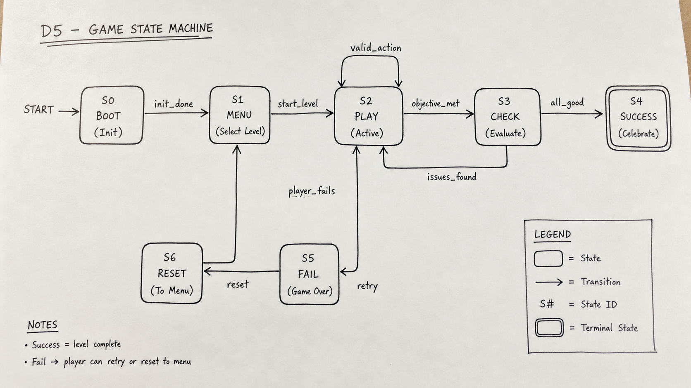
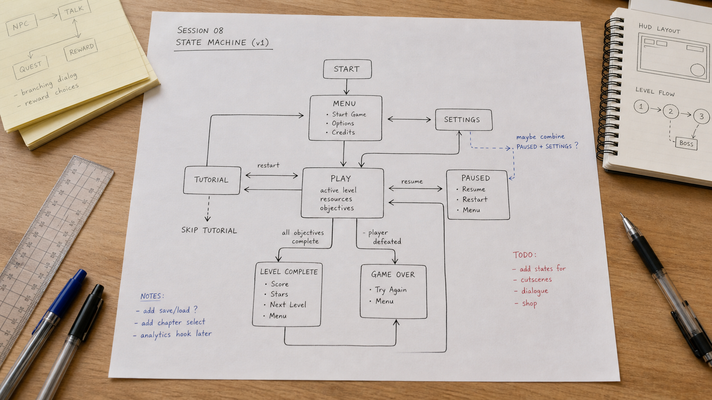

By the end of this session, you can…
- LO 12.1Present the design journey D1 → D5 in 8 slides and 8 minutes, with every claim traceable to an artifact in the repo.
- LO 12.2Run a 2-minute live demo of the loop that carried the most risk — not the one with the prettiest UI.
- LO 12.3Answer reviewer questions without defending — clarify the decision, cite the artifact, acknowledge limits.
- LO 12.4Reviewer-score two other teams using the rubric; produce actionable written feedback.
- LO 12.5Submit D5 — repo snapshot, one-pager, presentation deck — within 24 hours of defense.
12 minutes. 8 slides. Every minute a commitment.
| Time | Segment | What the panel is scoring |
|---|---|---|
| 00:00–01:00 | Frame — who the learner is, what the gap is, why a game. | Whether you earn the right to have built this at all. |
| 01:00–03:00 | Crosswalk — objective types → mechanics, with one out-of-scope row. | Defensibility of the design direction. |
| 03:00–05:00 | Live demo — the riskiest loop, one run, no narration. | Whether the thing runs and teaches. |
| 05:00–08:00 | Playtest findings — pre-registered hypotheses, verdicts, revisions. | Rigor; willingness to be disproven. |
| 08:00–09:30 | Audit — one paragraph per lens; the hardest finding. | Self-awareness; design maturity. |
| 09:30–11:00 | Known limits & v2 roadmap. | What you chose not to do, and why. |
| 11:00–12:00 | Close — the one claim you are most confident in, and the artifact that backs it. | Clarity under time pressure. |
Eight slides, exact
Title + one-sentence claim
"This game teaches [specific skill] to [specific learner] in [specific context]."
Problem & learner (from D1)
Gap + context. Numbers if you have them. A face if you have consent.
Crosswalk (from D2)
One table; highlight the out-of-scope row.
The loop
One diagram — your state machine, simplified for reviewers.
Live demo marker
A single hold-slide. No text. You run the game here.
Playtest (from D4)
Hypotheses / verdicts / revisions. No gloss.
Audit & limits
The hardest finding; three known limits; v2 roadmap.
One claim, one artifact
The claim you stand behind and where in the repo the evidence sits.
End on the claim. The claim is why the panel is here; "thanks for watching" is for conference talks. Your close slide is evaluated; the thank-you slide is not.
Clarify, cite, acknowledge
Every reviewer question is one of three kinds. Your job is to recognize which kind, and respond in the register it calls for — not to defend reflexively.
| Question type | What it sounds like | How to respond |
|---|---|---|
| Clarifying | "How does the pager interrupt work again?" | Clarify in one sentence; point to the artifact for depth. |
| Probing | "Why not branching feedback instead of delayed consequence?" | Cite the decision in the crosswalk; name the trade-off; cite the playtest evidence if any. |
| Limit | "What about learners who cannot use a mouse?" | Acknowledge. Name it as a known limit on slide 7, or commit to capturing it in the v2 roadmap on the spot. |
When you say "good question," you are stalling. Replace it with the first clause of your answer. If you cannot answer in one clause, you are probing for a limit — say so.
Score two teams, in writing
Every participant reviews two presentations using the rubric. Submit written feedback within 24 hours of the defense. Your reviews are themselves rubric-scored — for actionability, for specificity, and for engagement with what the team did, not what you would have done.
What you submit within 24 hours
| Artifact | Contents |
|---|---|
| Repo snapshot | Versioned folder with D1–D4 final versions, facilitator guide v-final, spec, audit memo, backlog (frozen), change log. |
| Presentation deck | The 8 slides as shown — no post-hoc edits. Panel is scoring what they saw. |
| One-pager | Front: claim, learner, loop diagram, one playtest finding. Back: limits and v2 roadmap. |
| Demo recording | Screen capture of the live demo segment; unedited; submitted as-is even if it stumbled. |
| Self-reflection | 300 words: the decision you are proudest of, the one you would revisit, and what you learned as a designer — not as a project manager. |


Two closing handouts for the portfolio and beyond
The first is the evaluators' shared reference for what strong portfolio work looks like; bring it to your own defense. The second is the curated resource pathway for everything you are about to keep doing once the credential closes.
Portfolio Exemplar Set
Annotated benchmarks for the five portfolio artifacts — learner analysis, design brief, teacher implementation guide, playtest report, final presentation. Shows what strong work includes, what weak work misses, how evaluators read quality.
Why this week Read the chain before your defense. If any artifact in your own portfolio breaks the chain (design logic → facilitation → evidence → revision), fix it tonight.
Additional Learning Resources Guide
Curated external resources classified by beginner / intermediate / advanced and mapped back to the 12-session arc. Pedagogy and game-based learning, accessibility, prototyping, Three.js, input/telemetry, evidence. Verified April 2026.
Why this week After the credential closes, pick one pathway — pedagogy, accessibility, implementation, or evidence — and follow it for the next quarter. This handout is how you keep the discipline.
What you take with you
You have spent twelve weeks learning that educational game design is not about games that happen to teach, or lessons that happen to play. It is about the disciplined alignment of a specific learner, a specific gap, a specific mechanic, and a specific claim you are willing to defend.
Every deliverable in this credential exists to keep you honest against that alignment. D1 forces you to name the learner. D2 forces you to match mechanic to objective type. D3 forces you to disprove your loop cheaply. D4 forces you to listen to someone other than yourself. D5 forces you to say out loud what the game does and does not do. If you took the process seriously, the game you built this semester is not your best work — it is your baseline. The next one will be better, because the process is now yours.
Where you end.
Same eight skills, same scale. Rate where you are now — not where you thought you would be. The cohort growth chart on analytics.html reads both your S1 and S12 responses and plots the delta. A negative delta is possible and honest: it usually means you now understand how little you knew in week 1.
Designing learning experiences grounded in learner analysis, measurable objectives, iteration.
Designing formative and summative assessments aligned to stated outcomes.
Producing low-fidelity prototypes for rapid user testing and iteration.
Observing, interviewing, and recruiting learners; separating observation from interpretation.
Writing hand-off-ready technical specs a non-author could implement.
Designing against UDL multiple means; naming excluded populations.
Responding to feedback, logging revisions, declining scope with reasons.
Interpreting learner data — not chasing vanity metrics — to drive revision.
Scale · 0 never done this · 1 tried once · 2 can do with guidance · 3 can do independently · 4 can teach it
Before you move on…
Four questions on this session's concepts. Choices lock on first click — formative only.